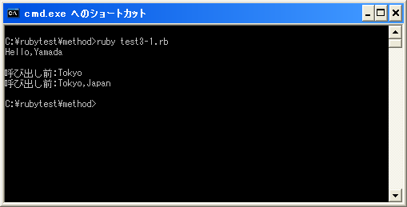

引数を付けたメソッド呼び出し
メソッドでは引数を付けて呼び出すことが出来ます。呼び出し側ではメソッドに渡したいオブジェクトを引数として記述してメソッドを呼び出します。
メソッド名(引数1, 引数2, ...)
引数が複数ある場合にはカンマで区切って続けて記述して下さい。
メソッド側ではメソッド名の後ろに受け取る引数の数だけ変数を記述します。
def メソッド名(変数1, 変数2, ...) 実行する処理 実行する処理 end
※メソッドを呼び出す側で指定した引数を「実引数」、メソッド定義側で記述した引数を「仮引数」と呼ぶこともあります。
呼び出し側で指定した引数の数とメソッド定義で指定した変数の数は一致していなければエラーとなります。(ただし引数にデフォルト値などを設定しておく事も可能です。詳細は別のページで確認します)。
具体的には次のように記述します。
def printHello(msg, name)
print(msg + "," + name + "¥n")
end
printHello("Hello", "Yamada")
上記では引数として「Hello」と「Yamada」と言う文字列オブジェクトを2つ指定しています。メソッドでは引数として「msg」と「name」の2つの変数が指定されていますので、「Hello」が変数「msg」に代入され、「Yamada」が変数「name」に代入されます。
オブジェクトが代入された変数はメソッド内でローカル変数として参照することが出来ます。
メソッド定義での変数の扱い
変数にオブジェクトが代入された時、変数にはオブジェクトのコピーが格納されるのではなく、変数は代入されたオブジェクトを指し示すようになるだけでした。メソッドを呼び出す時も同じであり、メソッドに渡されてきたオブジェクトは引数に指定された変数にコピーが格納されるのではなく、変数は引数として渡されてきたオブジェクトを指し示すことになります。
その為、メソッド側でオブジェクトそのものを変更するような処理をすると、呼び出し元のオブジェクトも変更されます。
def addString(str) str << ",Japan" end address = "Tokyo" print(address + "¥n") addString(address) print(address + "¥n")
上記ではメソッド内で引数として渡されてきた文字列オブジェクトに別の文字を追加しています。その結果、メソッド呼び出し前と呼び出し後では、変数「address」が指し示している文字列オブジェクトが書き換えられているため、メソッド呼び出しの前と後では別の文字列を出力します。
サンプルプログラム
では簡単なプログラムで確認して見ます。
#! ruby -Ku
require "kconv"
def printHello(msg, name)
print(msg + "," + name + "¥n")
end
def addString(str)
str << ",Japan"
end
printHello("Hello", "Yamada")
print("¥n")
address = "Tokyo"
print(Kconv.tosjis("呼び出し前:") + address + "¥n")
addString(address)
print(Kconv.tosjis("呼び出し前:") + address + "¥n")
上記のプログラムを「test3-1.rb」として保存します。文字コードはUTF-8です。そして下記のように実行して下さい。

( Written by Tatsuo Ikura )

著者 / TATSUO IKURA
初心者～中級者の方を対象としたプログラミング方法や開発環境の構築の解説を行うサイトの運営を行っています。